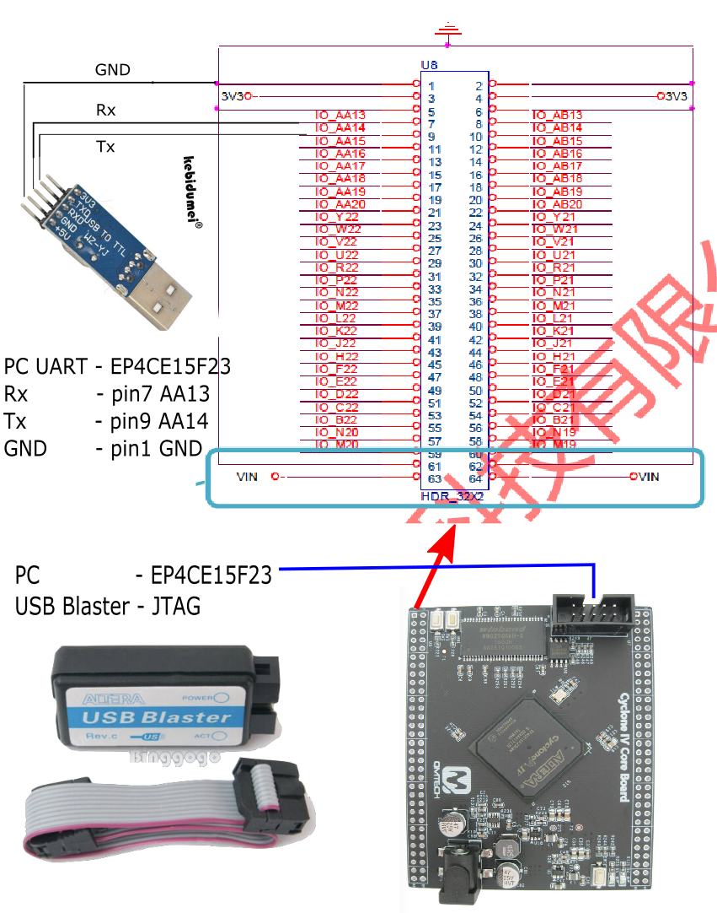
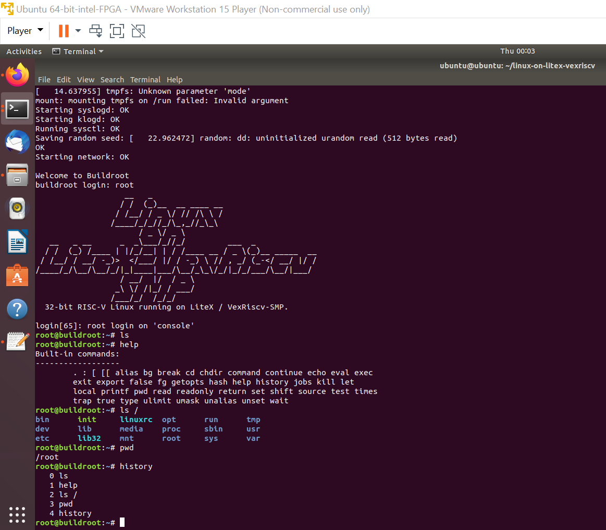

Chapter 3 Running Linux on FPGA VexRiscv CPU implementation
從上一個章節的 FPGA Hello world - 點亮 LED 的範例, 直接跳到 RISC-V CPU 跑 Linux 似乎有點快, 不過, 有時候, 動手做比了解原理更簡單, 這實驗看起來不容易, 做起來還真的不難, 比我想像的要簡單很多. (而且, 全部加起來的費用不到 1,000 台幣)
3.1 準備工作
硬體說明
* The FPGA hardware for this project is based on QMTech Altera Cyclone IV EP4CE15F23CBN core board, Mac 硬碟
* where to buy
* intel Altera USB Blaster : intel 在併購 Altera 後將這條 cable 改成很普通的名字, 叫做 FPGA download cable
* USB 轉 TTL RS232 cable
* 線路圖

軟體說明
* 基於 linux-on-litex-vexriscv 的步驟
* 需要安裝其它套件
* LiteX 是基礎 LiteX - build your hardware, easily
* pythondata-cpu-vexriscv
* SpinalHDL (用於產生 VHDL/Verilog 檔案):需要安裝 Java JDK 及 Scala SBT
* 安裝 Altera IDE Quartus (見上節)
* 安裝 PIP3 : linux-on-litex-vexriscv 使用 Python3, Python3 已經是 Ubuntu 18.04 標配, 如果還沒有安裝 PIP3, 記得要安裝. (如果不小心下錯指令跟版本到 Python 或 PIP, 程式會報錯, 需要使用 >= Python 3.5, 再安裝 PIP3 即可)
$ sudo apt install python3-pip
$3.2 軟體安裝
3.2.1 軟體介紹
linux-on-litex-vexriscv 開宗明義就提到結合 Spinal HDL 跟 Migen 來 deploy 到各種不同的 FPGA 開發板來實現, 以 VexRiscv CPU (Spinal HDL 撰寫) 為中心, 用 LiteX (基於 Migen Python DSL) 建立 SOC.
3.2.2 適用開發板
適用多種不同的 FPGA 品牌跟開發板, 雖然規格跟功能各有不同, 但都適用同一套安裝程序. 我手上的 QMTech EP4CE15F23CBN Altera Cyclone IV 規格是最低的, 也可以運作.
3.2.3 預備安裝
$ sudo apt install build-essential device-tree-compiler wget git python3-setuptools
$ git clone https://github.com/litex-hub/linux-on-litex-vexriscv
$ cd linux-on-litex-vexriscv
$3.2.4 Pre-built Bitstreams 跟 Linux/OpenSBI images
下載image, 需要下載至 linux-on-litex-vexriscv/images 目錄下
* inux_2020_12_30.zip (5.10-stable)： 包含 “Image,” “rootfs.cpio”
* opensbi_2020_12_15.zip ： 包含 “opensbi.bin”
至於 .dtb, 會在之後產生 QMTech_EP4CE15F 所需的 rv32.dtb
3.2.5 安裝 LiteX
到 Enjoy-digital/litex 有完整的安裝過程及模擬
3.2.5.1 安裝 Migen/LiteX 及 LiteX’s 核心:
$ wget https://raw.githubusercontent.com/enjoy-digital/litex/master/litex_setup.py
$ chmod +x litex_setup.py
# $ ./litex_setup.py init install --user (--user to install to user directory) # 應該是在 --user 後接上欲安裝的目錄
$ ./litex_setup.py init install --user # 會安裝在 ~ 目錄下會在 ~ 目錄下安裝 LiteX 所需的許多檔案目錄
3.2.5.2 更新 (第一次安裝可省略)
後續如果有需要更新 github repo 的內容, 利用以下指令
$ cd linux-on-litex-vexriscv/
$ ./litex_setup.py update3.2.5.3 安裝 RISC-V toolchain (如果想要的話 test/create a SoC with a CPU):
$ cd linux-on-litex-vexriscv/
$ ./litex_setup.py gcc3.2.5.4 Build 開發板
到上個步驟 litex_setup.py 建立的目錄下的子目錄 litex-boards/litex_boards/targets 去執行
# 以我的例子 litex_setup.py 目錄建立在 ～
$ cd ~
$ cd litex-boards/litex_boards/targets
$ ./qmtech_ep4ce15.py
$3.2.5.5 安裝及在筆電上測試 LiteX (我們可以安裝, 在筆電上模擬測試)
$ sudo apt install libevent-dev libjson-c-dev verilator
$ lxsim --cpu-type=vexriscv進入 litex 環境後, 出現以下螢幕, 可以輸入 help 來看可用的指令有哪些, 用 ctrl-c 結束 litex, 回到 Ubuntu 環境

3.2.6 安裝 RISC-V toolchain
回到 linux-on-litex-vexriscv 的步驟, 接下去安裝
$ wget https://static.dev.sifive.com/dev-tools/riscv64-unknown-elf-gcc-8.1.0-2019.01.0-x86_64-linux-ubuntu14.tar.gz
$ tar -xvf riscv64-unknown-elf-gcc-8.1.0-2019.01.0-x86_64-linux-ubuntu14.tar.gz
$ export PATH=$PATH:$PWD/riscv64-unknown-elf-gcc-8.1.0-2019.01.0-x86_64-linux-ubuntu14/bin/
$3.2.7 安裝 OpenOCD (做硬體測試時需要, 所以我們需要安裝)
$ sudo apt install libtool automake pkg-config libusb-1.0-0-dev
$ git clone https://github.com/ntfreak/openocd.git
$ cd openocd
$ ./bootstrap
$ ./configure --enable-ftdi
$ make
$ sudo make install
$3.2.8 執行 LiteX 模擬
3.2.8.1 安裝 SpinalHDL 需要安裝 Java SDK 跟 Scala 的 SBT
$ sudo apt-get install openjdk-8-jdk
$ sudo apt-get install scala
$ echo "deb https://dl.bintray.com/sbt/debian /" | sudo tee -a /etc/apt/sources.list.d/sbt.list
$ sudo apt-key adv --keyserver hkp://keyserver.ubuntu.com:80 --recv 642AC823
$ sudo apt-get update
$ sudo apt-get install sbt
$ git clone https://github.com/SpinalHDL/SpinalTemplateSbt.git SpinalTemplateSbt
$ cd SpinalTemplateSbt
$ sbt run # select "mylib.MyTopLevelVhdl" in the menu
$ ls MyTopLevel.vhd3.2.8.2 執行模擬
$ cd /linux-on-litex-vexriscv/
$ ./sim.py3.2.9 在硬體上測試
3.2.9.1 Build FPGA bitstream
我將部份的 log po 上, 完整 log, 請看 litex_lxterm.log
# github 上原始指令
# $ ./make.py --board=XXYY --cpu-count=X --build
# 配合 FPGA 開發板修改後的指令如下
ubuntu@ubuntu:~/linux-on-litex-vexriscv$ ./make.py --board=qmtech_ep4ce15 --cpu-count=1 --build
INFO:SoC: __ _ __ _ __
INFO:SoC: / / (_) /____ | |/_/
INFO:SoC: / /__/ / __/ -_)> <
INFO:SoC: /____/_/\__/\__/_/|_|
INFO:SoC: Build your hardware, easily!
INFO:SoC:--------------------------------------------------------------------------------
INFO:SoC:Creating SoC... (2021-06-23 21:55:13)
INFO:SoC:--------------------------------------------------------------------------------
INFO:SoC:FPGA device : EP4CE15F23C8.
INFO:SoC:System clock: 50.00MHz.
INFO:SoCBusHandler:Creating Bus Handler...
INFO:SoCBusHandler:32-bit wishbone Bus, 4.0GiB Address Space.
INFO:SoCBusHandler:Adding reserved Bus Regions...
INFO:SoCBusHandler:Bus Handler created.
INFO:SoCCSRHandler:Creating CSR Handler...
INFO:SoCCSRHandler:32-bit CSR Bus, 32-bit Aligned, 16.0KiB Address Space, 2048B Paging, big Ordering (Up to 32 Locations).
INFO:SoCCSRHandler:Adding reserved CSRs...
INFO:SoCCSRHandler:ctrl CSR added at Location 0.
INFO:SoCCSRHandler:uart CSR added at Location 2.
INFO:SoCCSRHandler:timer0 CSR added at Location 3.
INFO:SoCCSRHandler:CSR Handler created.
INFO:SoCIRQHandler:Creating IRQ Handler...
INFO:SoCIRQHandler:IRQ Handler (up to 32 Locations).
INFO:SoCIRQHandler:Adding reserved IRQs...
INFO:SoCIRQHandler:IRQ Handler created.
INFO:SoC:--------------------------------------------------------------------------------
INFO:SoC:Initial SoC:
INFO:SoC:--------------------------------------------------------------------------------
INFO:SoC:32-bit wishbone Bus, 4.0GiB Address Space.
INFO:SoC:32-bit CSR Bus, 32-bit Aligned, 16.0KiB Address Space, 2048B Paging, big Ordering (Up to 32 Locations).
CSR Locations: (3)
- ctrl : 0
- uart : 2
- timer0 : 3
INFO:SoC:IRQ Handler (up to 32 Locations).
INFO:SoC:--------------------------------------------------------------------------------
......
Info: Quartus Prime Timing Analyzer was successful. 0 errors, 16 warnings
Info: Peak virtual memory: 592 megabytes
Info: Processing ended: Wed Jun 23 21:57:07 2021
Info: Elapsed time: 00:00:07
Info: Total CPU time (on all processors): 00:00:08
Info: *******************************************************************
Info: Running Quartus Prime Convert_programming_file
Info: Version 20.1.1 Build 720 11/11/2020 SJ Lite Edition
Info: Copyright (C) 2020 Intel Corporation. All rights reserved.
Info: Your use of Intel Corporation's design tools, logic functions
Info: and other software and tools, and any partner logic
Info: functions, and any output files from any of the foregoing
Info: (including device programming or simulation files), and any
Info: associated documentation or information are expressly subject
Info: to the terms and conditions of the Intel Program License
Info: Subscription Agreement, the Intel Quartus Prime License Agreement,
Info: the Intel FPGA IP License Agreement, or other applicable license
Info: agreement, including, without limitation, that your use is for
Info: the sole purpose of programming logic devices manufactured by
Info: Intel and sold by Intel or its authorized distributors. Please
Info: refer to the applicable agreement for further details, at
Info: https://fpgasoftware.intel.com/eula.
Info: Processing started: Wed Jun 23 21:57:07 2021
Info: Command: quartus_cpf -c qmtech_ep4ce15.sof qmtech_ep4ce15.rbf
Info: Quartus Prime Convert_programming_file was successful. 0 errors, 0 warnings
Info: Peak virtual memory: 323 megabytes
Info: Processing ended: Wed Jun 23 21:57:07 2021
Info: Elapsed time: 00:00:00
Info: Total CPU time (on all processors): 00:00:00–board=XXYY 裡面的 XXYY, 可以參照 (github) linux-on-litex-vexriscv/make.py 裡面的 supported_boards 冒號左邊的定義
supported_boards = {
# Xilinx
"acorn_cle_215": AcornCLE215,
"arty": Arty,
"arty_a7": ArtyA7,
"arty_s7": ArtyS7,
"netv2": NeTV2,
"genesys2": Genesys2,
"kc705": KC705,
"kcu105": KCU105,
"zcu104": ZCU104,
"nexys4ddr": Nexys4DDR,
"nexys_video": NexysVideo,
"minispartan6": MiniSpartan6,
"pipistrello": Pipistrello,
"xcu1525": XCU1525,
"qmtech_wukong": Qmtech_WuKong,
"sds1104xe": SDS1104XE,
# Lattice
"versa_ecp5": VersaECP5,
"ulx3s": ULX3S,
"hadbadge": HADBadge,
"orangecrab": OrangeCrab,
"camlink_4k": CamLink4K,
"trellisboard": TrellisBoard,
"ecpix5": ECPIX5,
"colorlight_i5": Colorlight_i5,
# Altera/Intel
"de0nano": De0Nano,
"de10nano": De10Nano,
"qmtech_ep4ce15": Qmtech_EP4CE15,
}
3.2.9.2 Load FPGA bitstream
上傳 bitstream 到 FPGA 板, 將部份的 log po 於下方, 完整 log, 請看 litex_lxterm.log
ubuntu@ubuntu:~/linux-on-litex-vexriscv$ ./make.py --board=qmtech_ep4ce15 --cpu-count=1 --load
INFO:SoC: __ _ __ _ __
INFO:SoC: / / (_) /____ | |/_/
INFO:SoC: / /__/ / __/ -_)> <
INFO:SoC: /____/_/\__/\__/_/|_|
INFO:SoC: Build your hardware, easily!
INFO:SoC:--------------------------------------------------------------------------------
INFO:SoC:Creating SoC... (2021-06-23 22:03:34)
INFO:SoC:--------------------------------------------------------------------------------
INFO:SoC:FPGA device : EP4CE15F23C8.
INFO:SoC:System clock: 50.00MHz.
.......
Info: Command: quartus_pgm -m jtag -c USB-Blaster -o p;/home/ubuntu/linux-on-litex-vexriscv/build/qmtech_ep4ce15/gateware/qmtech_ep4ce15.sof@1
Info (213045): Using programming cable "USB-Blaster [2-2.1]"
Info (213011): Using programming file /home/ubuntu/linux-on-litex-vexriscv/build/qmtech_ep4ce15/gateware/qmtech_ep4ce15.sof with checksum 0x0091D628 for device EP4CE15F23@1
Info (209060): Started Programmer operation at Wed Jun 23 22:03:39 2021
Info (209016): Configuring device index 1
Info (209017): Device 1 contains JTAG ID code 0x020F20DD
Info (209007): Configuration succeeded -- 1 device(s) configured
Info (209011): Successfully performed operation(s)
Info (209061): Ended Programmer operation at Wed Jun 23 22:03:40 2021
Info: Quartus Prime Programmer was successful. 0 errors, 0 warnings
Info: Peak virtual memory: 329 megabytes
Info: Processing ended: Wed Jun 23 22:03:40 2021
Info: Elapsed time: 00:00:04
Info: Total CPU time (on all processors): 00:00:00
$3.2.9.3 Load Linux images 透過 Serial port 到 FPGA 板
$ lxterm --images=images/boot.json /dev/ttyUSBX --speed=1e6
$執行 lxterm 程式後, 再去按下 QMTech FPGA 板子的 RESET 按鍵, 就可以順利從 serial port 下載 Linux images (這是原版漏的內容, 花了半天的時間在空等, 也沒有錯誤訊息, 因為 FPGA 板子比較早開機, 筆電的 images 比較晚送到, 就彼此在等對方. reset FPGA 板子後, 重新開始 negotiation 的 protocol, 馬上開始上傳 images)

3.2.10 Option 選項 - Configure/Use the peripherals
參考 HOWTO 文件來 configure 已及 Linux 週邊設定.
3.2.10.1 創建 Linux binaries (optional) :
$ git clone http://github.com/buildroot/buildroot
$ cd buildroot
$ make BR2_EXTERNAL=../linux-on-litex-vexriscv/buildroot/ litex_vexriscv_defconfig
$ make產生的 binaries 位於目錄 output/images/ 下
3.2.10.2 創建 OpenSBI binary (optional) :
$ git clone https://github.com/litex-hub/opensbi --branch 0.8-linux-on-litex-vexriscv
$ cd opensbi
$ make CROSS_COMPILE=riscv-none-embed- PLATFORM=litex/vexriscv
$產生的 binary 位於目錄 build/platform/litex/vexriscv/firmware/fw_jump.bin
3.2.10.3 創建 VexRiscv Linux variant (optional) ：我跳過這部分
If the VexRiscv configuration you ask isn’t already generated, you will need to install java and SBT on your machine to enable their local on demande generation.
To install java and SBT see Install VexRiscv requirements: https://github.com/enjoy-digital/VexRiscv-verilog#requirements
3.2.10.4 Udev rules (optional) ： 我跳過這部分
Not needed but can make loading/flashing bitstreams easier:
$ git clone https://github.com/litex-hub/litex-buildenv-udev
$ cd litex-buildenv-udev
$ make install
$ make reload